※這篇文章是用AI（Chat GPT 4o）製作，再由我部分補寫😁
2024年11月吃的😆
睽違許久，又去拜訪了集章活動的參加店家😊
這次造訪的是位於南城市大里的「笑丸商店」。
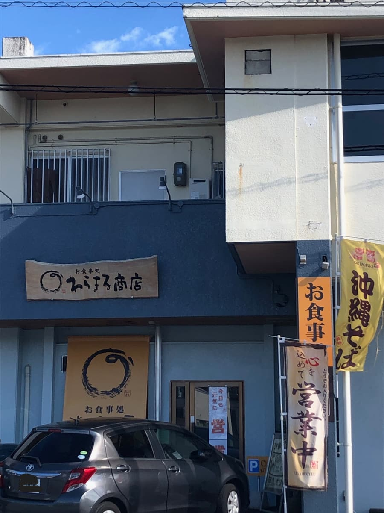
這是一家位在大樓1樓、氣氛沉靜的店，寫著「沖繩麵 無添加」的手繪看板和暖簾就是醒目的標誌🏮
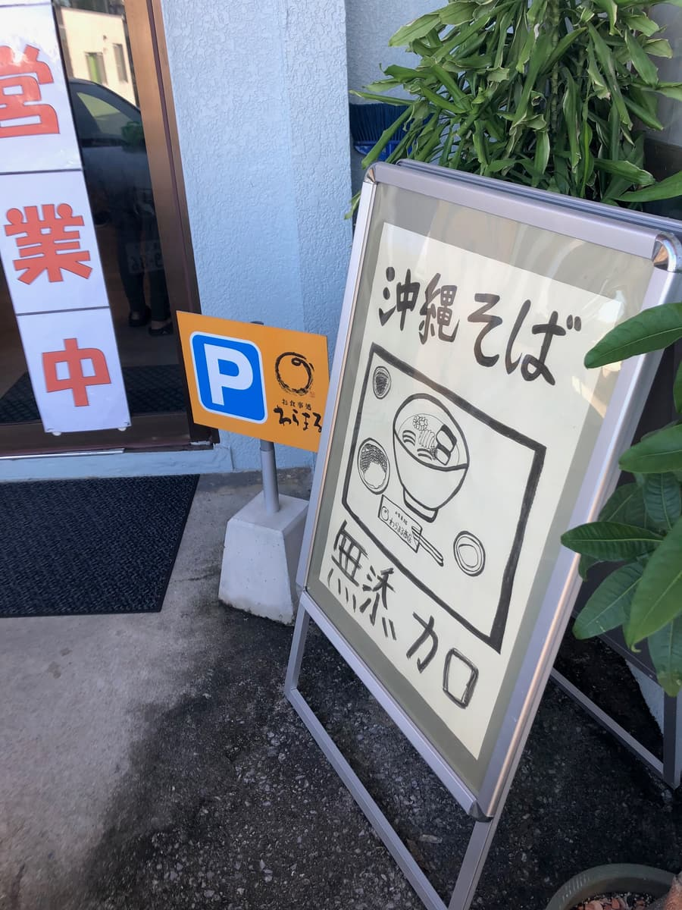
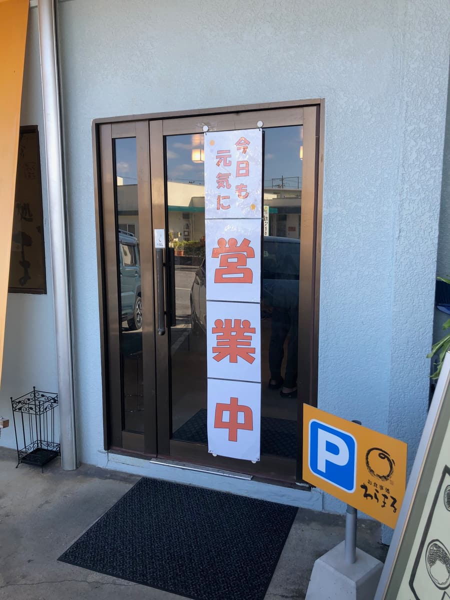
入口掛著「今天也精神滿滿營業中！」的字樣，傳達出朝氣蓬勃的氛圍✨
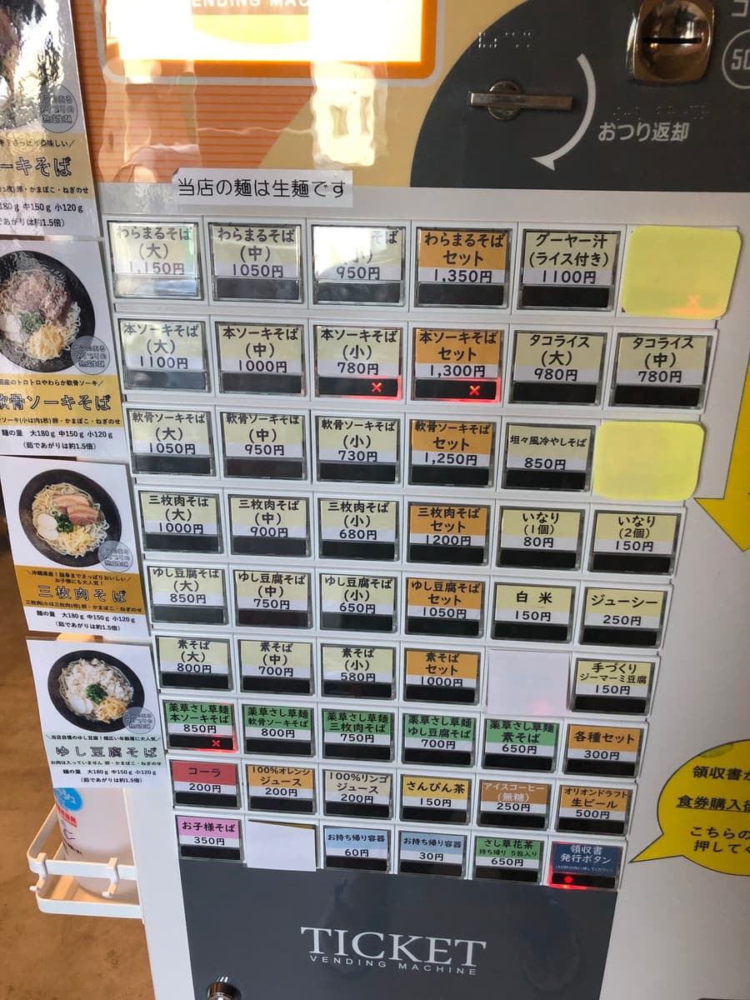
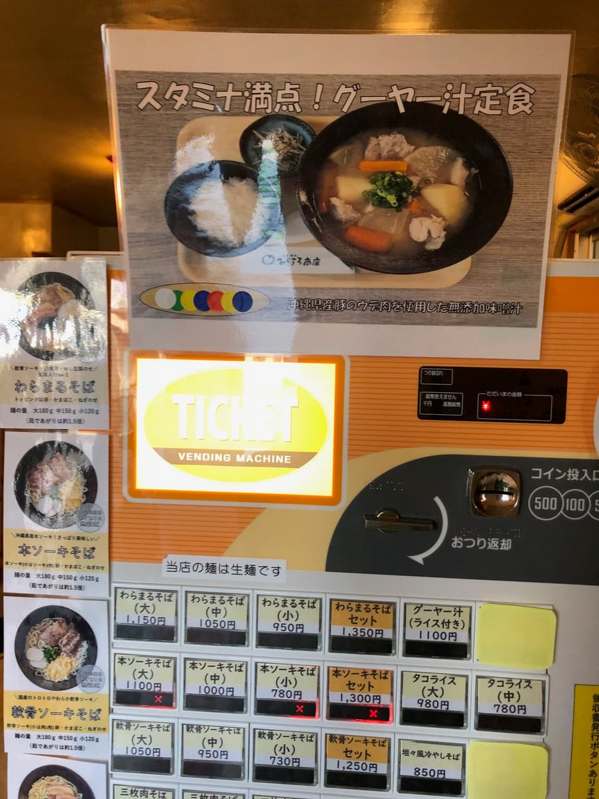
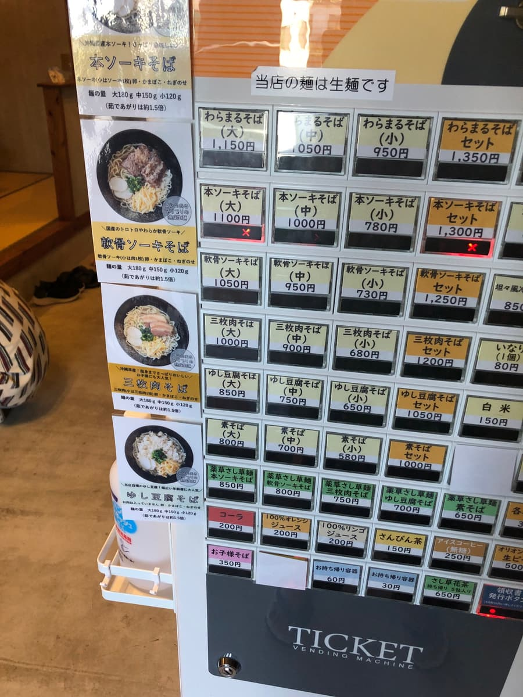
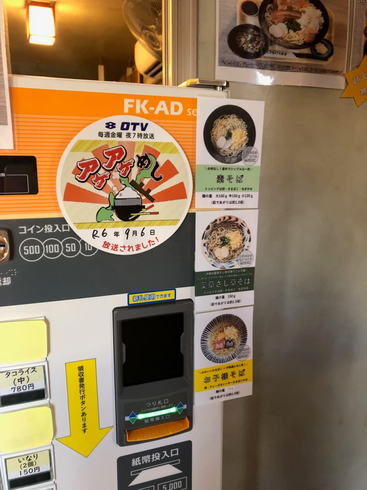
首先在售票機買了「笑丸麵（大）」1,150日圓。售票機上還寫著「本店的麵條是生麵」，讓人更加期待🍜
過了一會兒送上桌的「笑丸麵」，光看外觀就散發出溫柔的感覺😊
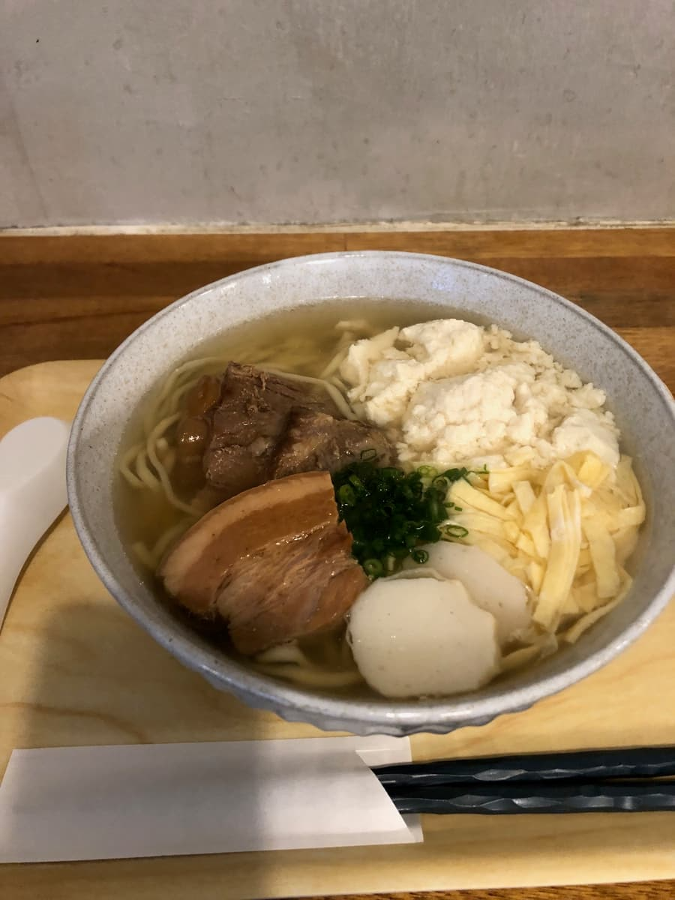
據說湯頭是用鹿兒島縣枕崎產的花鰹和北海道產的昆布熬成無添加高湯，再加入日曬鹽。喝上一口，鮮味緩緩擴散，滲進身體裡。味道非常清爽，能享受到自然的風味🌿
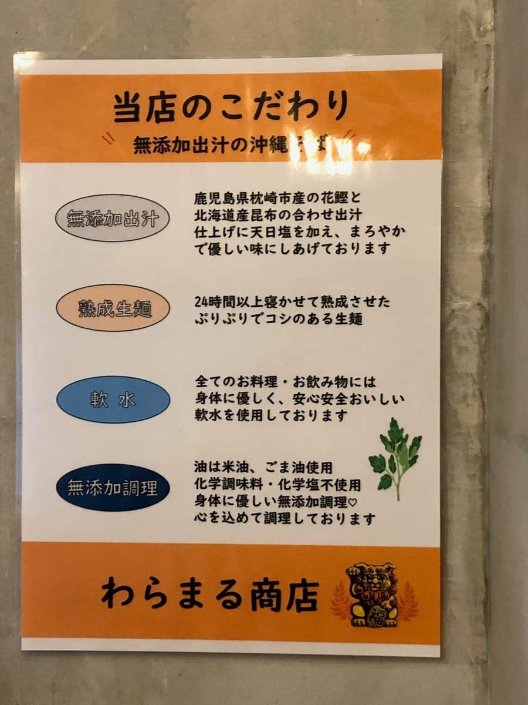
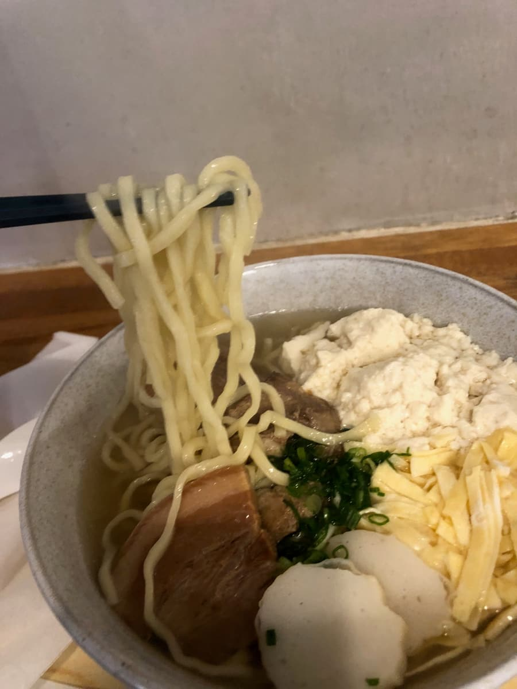
麵條是中細且略帶捲曲的熟成生麵。聽說這種麵靜置了24小時以上，口感彈牙Q彈，滑順好入喉，和湯頭也很搭✨
配料有三層肉、軟骨排骨、魚板、蛋絲、沖繩嫩豆腐和蔥花。
三層肉和軟骨排骨都是清爽路線的調味，兩者都燉得軟嫩入口即化，但還是帶有一點筋感（口感偏韌）。沖繩嫩豆腐增添了溫潤感，把整體溫柔地融合在一起😊
吃到一半，用紅薑、七味粉和島辣椒泡盛來變換味道🌶️
清爽的湯頭很適合島辣椒泡盛那辛辣的刺激感，紅薑也成為很好的亮點😉
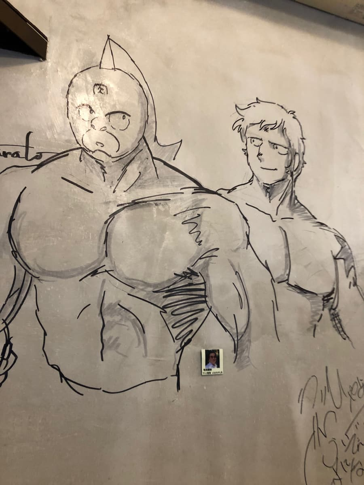
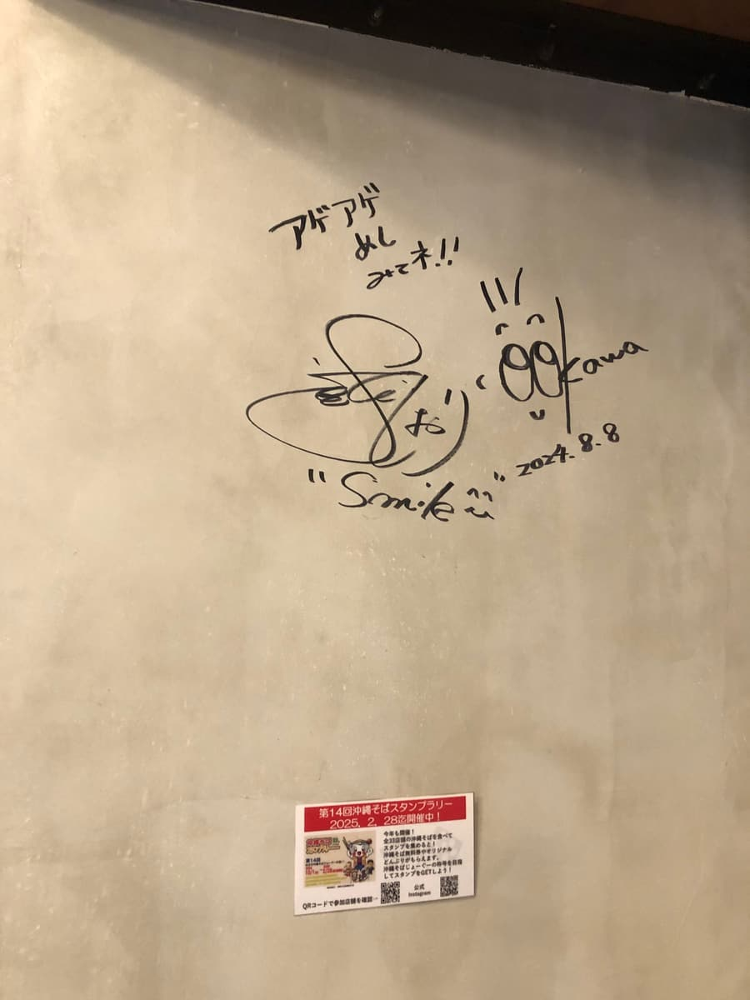
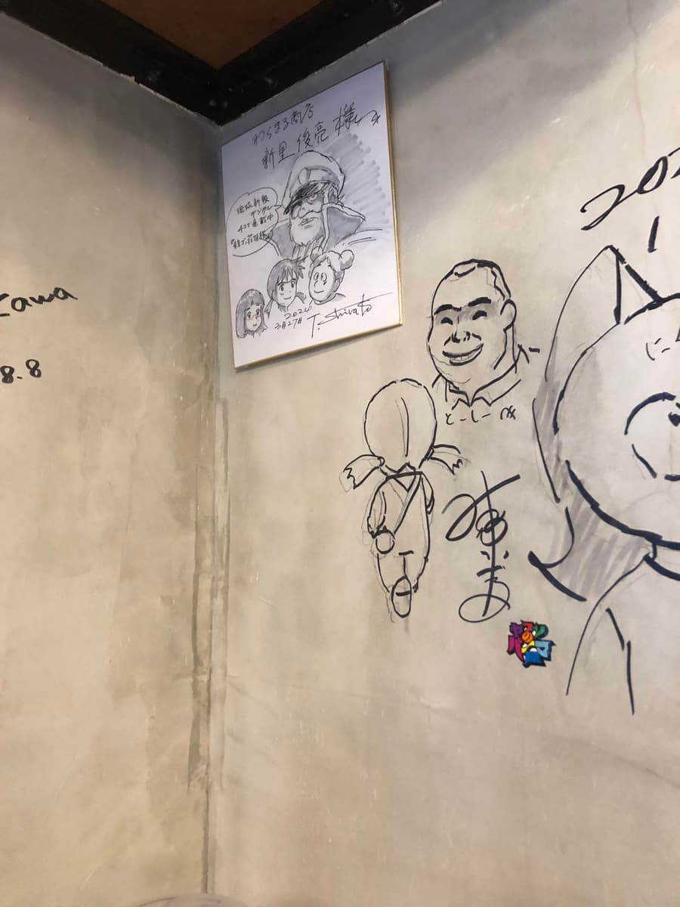
店內牆上有筋肉人風格的手繪插畫，帶點小小的玩心，是個很有趣的空間🎨 另外還有告示說明他們對無添加的堅持、用的是米油和芝麻油、使用軟水等等，讓人感受到店家的真心💛
最後當然也確實拿到集章活動的印章📸♪
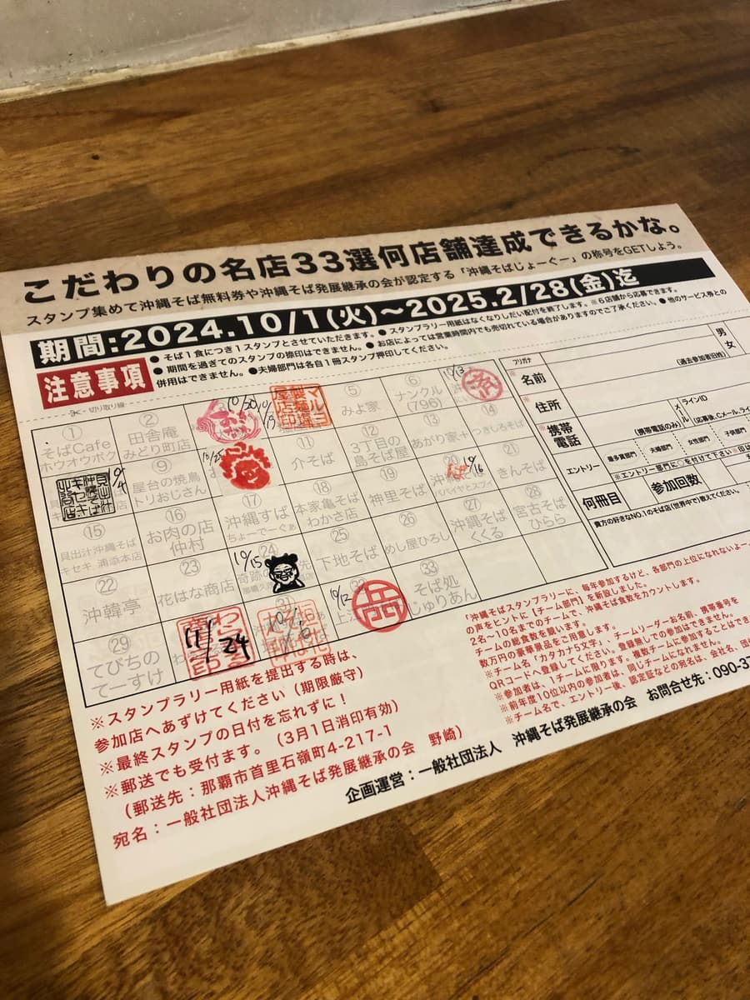
整體來說，比起首里系的沖繩麵，高湯的味道比較明顯，但清爽溫柔的風味令我印象深刻。不過個人覺得如果再多一點衝擊感會更開心。話雖如此，還是能感受到對食材的講究和對身體溫和的一碗呢😊
評分（9分/15分）：算是普通好吃的感覺。來南城市的時候，要不要來吃一次看看呢。
麵：★★★☆☆（3）
湯頭：★★★☆☆（3）
配料：★★★☆☆（3）